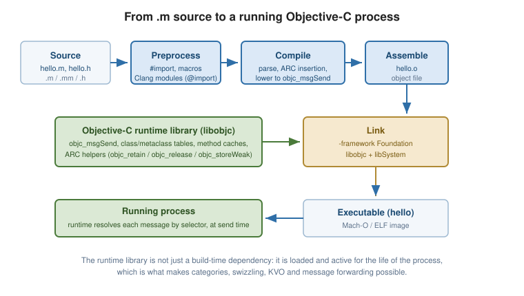

Getting Started
|
This content was generated with the assistance of AI and should be verified against the official documentation before being relied on in production. |
Objective-C is C with Smalltalk-style object messaging bolted on. Every valid C program is a valid
Objective-C program: the language adds a small set of @-prefixed directives, a square-bracket message-send
syntax, and a dynamic run-time library that decides at execution time which method a message actually invokes.
That "thin layer over C, dynamic dispatch at the top" design is the single fact that explains most of the rest
of this reference.
What Objective-C Is
The language has exactly two halves, and keeping them apart makes it far easier to learn:
-
The C half. Types, operators, control flow, functions, pointers,
struct, the preprocessor — all unchanged from C. Objective-C is a strict superset of C, so C libraries are called directly with no bridge, no marshalling and no overhead. -
The Objective-C half.
@interface/@implementationclass declarations, message sends written[receiver message], protocols, categories, and a run-time library (libobjc) that resolves each message by selector at the moment it is sent.
// The C half: an ordinary function, ordinary types.
int doubled(int x) { return x * 2; }
// The Objective-C half: a message send. "length" is looked up at run time.
NSString *greeting = @"Hello";
NSUInteger n = [greeting length];The second line is not a function call that the compiler resolves to an address. It compiles to a call to
objc_msgSend(greeting, @selector(length)), and the run time finds the implementation. This is why
Objective-C supports categories, method swizzling, key-value observing and message forwarding — features
that a statically dispatched language cannot offer — and also why the compiler cannot catch an
"unrecognized selector" mistake for you.
A Short History
| Period | What happened |
|---|---|
Early 1980s |
Brad Cox and Tom Love design Objective-C at Stepstone, adding Smalltalk-80’s messaging model to C so that reusable "software ICs" could be built without leaving the C toolchain. |
1988 |
NeXT licenses the language and builds NeXTSTEP on it. The |
1996-2001 |
Apple acquires NeXT; NeXTSTEP becomes the basis of Mac OS X, and Objective-C becomes the language of Cocoa. |
2006-2007 |
Objective-C 2.0 ships with Mac OS X 10.5: declared properties ( |
2011 |
ARC — Automatic Reference Counting — moves retain/release bookkeeping into the compiler, and remains
the default memory model today. Literals and subscripting ( |
2014-present |
Swift is announced and gradually becomes Apple’s default language. Objective-C keeps evolving where it must
interoperate — nullability annotations, lightweight generics, |
Two features are removed and appear in this reference only as history: garbage collection (deprecated in
OS X 10.8, removed in 10.11) and class posing (poseAsClass:, see
Categories and Extensions). Neither is
available in any current toolchain.
Objective-C Compared
Versus C++
Both add objects to C, but from opposite directions:
| Objective-C | C++ | |
|---|---|---|
Dispatch |
Dynamic by default — selector looked up at run time |
Static by default; |
Unknown method |
Run-time error ( |
Compile-time error |
Object model |
Single inheritance + protocols; all objects are heap-allocated pointers |
Multiple inheritance, templates, stack or heap allocation, value semantics |
Introspection |
Rich and built in — classes, methods, ivars and properties are all enumerable at run time |
Minimal ( |
Memory |
ARC (compiler-inserted reference counting) |
RAII, smart pointers, manual |
The two can be mixed in one translation unit — see Objective-C++ and C Interoperability.
Versus Swift
Swift is safer and terser; Objective-C is more dynamic and has decades of shipped code behind it. Swift
enforces optionality, value types and exhaustive switch at compile time, where Objective-C leans on run-time
conventions (nil absorbing messages, NSError ** out-parameters). The two interoperate closely within one
target — see Swift Interoperability.
Objective-C remains worth knowing for maintaining and extending existing codebases, for reading Apple’s own framework headers, for run-time-driven techniques (KVO, swizzling, proxies) that Swift cannot express natively, and for C and C++ interoperability without a bridging layer.
Toolchains
| Toolchain | Notes |
|---|---|
Apple Clang (Xcode) |
The reference implementation and the subject of this section. Ships with Xcode or the Command Line Tools
( |
Clang (upstream LLVM) |
Available on Linux and Windows. Supports the language, but Apple’s frameworks are not present — pair it with GNUstep for a Foundation implementation. |
GCC |
Retains an Objective-C front end and the GNU run time. It lags Apple Clang: no ARC on the GNU run time in practice, and no Clang modules. Suitable for legacy GNUstep code. |
GNUstep |
An open-source reimplementation of the OpenStep/Cocoa APIs ( |
File Extensions
| Extension | Contents |
|---|---|
|
Header — the public interface: |
|
Implementation — Objective-C and C source ( |
|
Implementation compiled as **Objective-C**, so C syntax is also accepted. |
|
Prefix header, precompiled and implicitly included (rare in modern projects; prefer |
The Compilation Pipeline
An Objective-C translation unit travels the same route as a C one; what is distinctive is that the
Objective-C constructs are lowered into ordinary C calls into libobjc, and that the run-time library must
be linked in and is present at execution time.

Hello, World
#import <Foundation/Foundation.h>
int main(int argc, const char *argv[]) {
@autoreleasepool {
NSString *name = @"World";
NSLog(@"Hello, %@!", name);
}
return 0;
}Four things in nine lines are worth naming:
-
#importis Objective-C’s include directive — like#include, but it never includes the same file twice, so header guards are unnecessary. -
Foundation/Foundation.his the umbrella header of the Foundation framework, which suppliesNSString,NSArray,NSLogand the rest of the value and collection types. -
@autoreleasepoolbounds the lifetime of autoreleased temporaries. Under ARC it is still required at the top ofmainand in tight loops; see Automatic Reference Counting. -
%@is the format specifier for an Objective-C object:NSLogsends itdescriptionand prints the result. See Classes and Objects.
Building and Running
With Apple Clang on macOS:
clang -fobjc-arc -fmodules -Wall -Wextra \
-framework Foundation \
hello.m -o hello
./hello
# 2026-01-01 12:00:00.000 hello[12345:678901] Hello, World!With GNUstep on Linux:
clang `gnustep-config --objc-flags` \
hello.m -o hello \
`gnustep-config --base-libs`
./hellognustep-config --objc-flags emits the include paths and run-time selection flags; --base-libs emits the
linker flags for libgnustep-base. Substitute gcc for clang if you must use the GNU compiler, and drop
-fobjc-arc and -fmodules, which the GNU run-time configuration generally does not support.
The flag set used throughout this reference is clang -fobjc-arc -fmodules -Wall -Wextra -framework
Foundation: ARC on, Clang modules on, warnings turned up. Examples note explicitly where GNUstep differs.
See Also
-
Basic Syntax and Types — the type vocabulary (
id,BOOL,NSInteger,SEL) the rest of the section assumes. -
Classes and Objects — writing your first
@interface/@implementationpair. -
Build and Tooling — the full flag reference,
xcodebuild, analyzers, sanitizers and debugging.